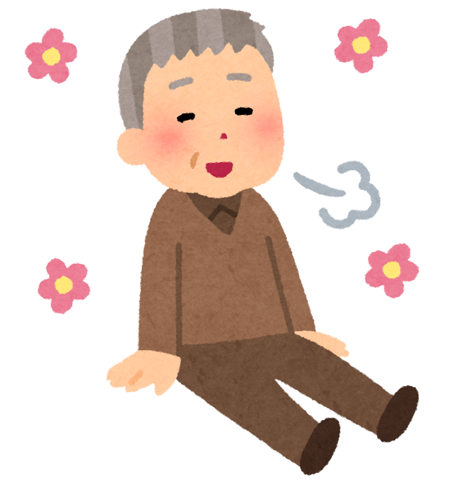

電話でつながる、安心な毎日。
高齢者向けお話し相手・見守りサービス
「最近、親とゆっくり話せていない」「一人暮らしが心配」—— はなそう(HanasO) は、そんなご家族の不安を少しでも軽くするための、 学生による電話お話し相手・見守りサービスです。
※現在は 電話のみ の対応です。ビデオ通話には対応していません。

- 一人暮らしの親御さんが、最近「寂しい」と言うことが増えた
- 遠方に住んでいて、こまめに電話する時間がなかなか取れない
- 日々の様子を、第三者の目線でも知っておきたい
- 高齢の家族の「話し相手」「気分転換」を用意してあげたい
こんなお悩み、ありませんか？
離れて暮らすご家族から、こんな声をよくお聞きします。
一人暮らしの親が、最近元気がない・声が沈んでいる気がする
遠方に住んでいて、こまめに電話してあげる時間がなかなか取れない
「誰とも話していない日」が増えていないか心配
見守りは気になるけど、機械的なサービスは味気ない気がする
学生が電話でお話しし、ご家族へ様子をお伝えします。
はなそう(HanasO) が選ばれる理由
高齢者向けの見守りサービスはいくつもあります。その中で はなそう(HanasO) が大切にしている、3つのことです。
機械音声ではなく「人」
自動音声の安否確認ではありません。学生が、その方に合わせてお話しします。 「話して楽しかった」と感じてもらえる時間を大切にします。
ご家族に様子をレポート
会話のあと、体調・生活リズム・気分などの様子を、ご家族へ簡単なレポートでお伝えします（ご希望に応じて）。
始めやすい料金
月4回 2,000円から。初回15分は無料でお試しできます。 「まず話してみる」からで大丈夫です。
他のサービスとの違い
| 比べるところ | はなそう(HanasO) | 自動音声の見守り | 大手の会話型 |
|---|---|---|---|
| 会話の中身 | 人が自由に会話 | 決まった音声のみ | 人が会話 |
| ご家族への様子共有 | あり（レポート） | 応答の有無のみ | あり |
| 月額のめやす | 2,000円〜 | 1,000〜1,300円前後 | 8,000円前後 |
| お試し | 初回15分 無料 | サービスにより異なる | 資料請求から |
※他社の料金は各社の公表情報にもとづく一般的なめやすで、プランにより異なります。 はなそう(HanasO) の強みは「人による会話 × ご家族へのレポート × 始めやすさ」です。
こんなときに、選ばれています
ご家族が「そろそろかな」と感じる、きっかけの一例です。
遠方で暮らす親御さんの、平日の話し相手に。なかなか帰省できない方へ。
退院後や、外出が減った時期の気分転換に。
一人の時間が長くなった方の、心の張り合いに。
毎週の楽しみ・生活のリズムづくりに。
まずは「初回15分 無料」からお試しください
「合うかどうか、話してみてから決めたい」——それで大丈夫です。 ご家族の方からのお電話も大歓迎です。
受付：土日 10:00〜17:00 ／ 通話料はこちら負担（ご本人の負担なし）